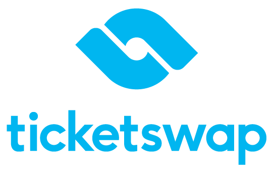

Ticketswap ontbrak functies voor minder validen.
Hoewel TicketSwap een sterk en bekend ticketplatform is, blijft de
gebruikservaring van de website achter ten opzichte van de app. Binnen
dit project heb ik de website nagebouwt met focus op verbeterde
toegankelijkheid.
Getest
Aan de hand van een WCAG-test heb ik de toegankelijkheid van
TicketSwap geëvalueerd. De grootste verbeterpunten lagen bij
screenreader-ondersteuning, waarvoor ik gerichte oplossingen heb
ontworpen.
Geleerd
Ik heb geleerd Mobile First beginnen te programmeren en hoe
belangrijk het is om een website inclusief te maken. Daarnaast heb
ik mijzelf verder ontwikkelt in HTML en CSS.
Verbeterd
Ik heb TicketSwap 1:1 opgebouwd met verbetering in de
webtoegankelijkheid, waaronder juiste heading-structuren,
alt-teksten op afbeeldingen, aria-labels voor secties wat leidt tot
verbeterde screenreader-ondersteuning.
